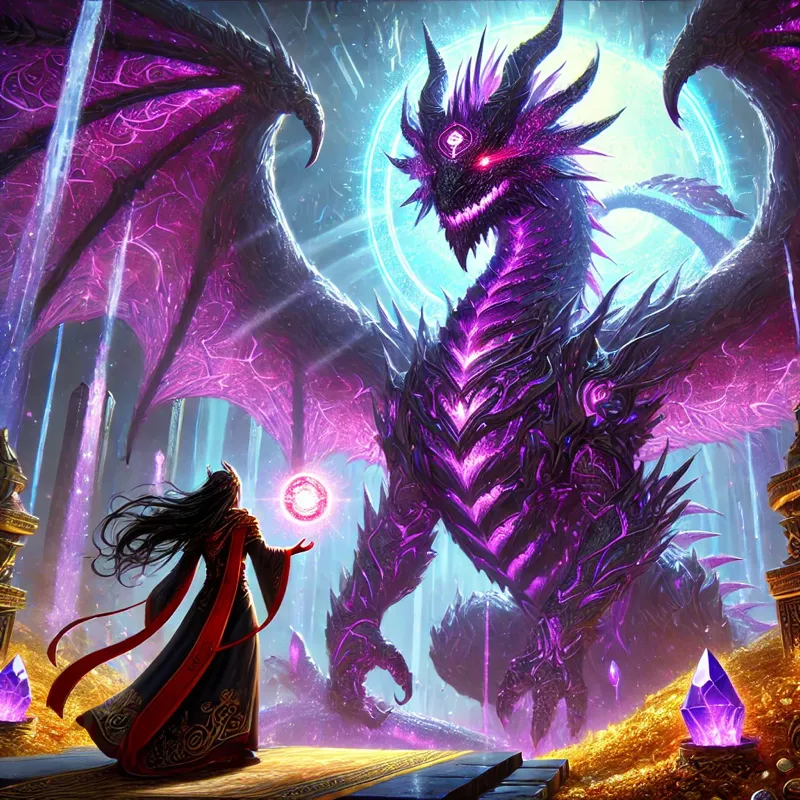

A Terra memecoin
DROGO is a hands-off meme coin built around its dragon, the cave and the community.

The dragon's treasury
DROGO is a hands-off Terra memecoin. A dragon guards the cave, the memes keep moving and every new artwork adds to the story.
01 / The meme coin
$DROGO is a hands-off memecoin from Terra — less about empty noise, more about a dragon, a cave and a community that keeps the joke alive.
The legend grows through memes, artwork and on-chain chapters. No forced utility: just DROGO, its treasure and a world made for people who enjoy the ride.

02 / The experience
From memes to artwork, every piece keeps the dragon’s story moving. The vault is also the place for future NFT chapters.
View the visual archive →03 / NFTs & lore
DROGO is a hands-off meme coin built around its dragon, the cave and the community.
Memes, artwork and the lore turn each moment into another piece of the dragon’s collection.
The vault leaves room for future NFT art and new chapters of the DROGO story.
04 / Explore
Follow the market, share the memes, visit the DAO or walk through the dragon’s visual archive.